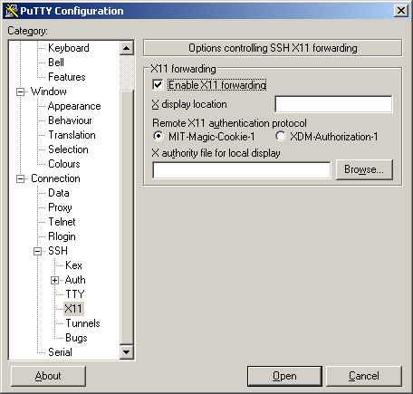

Connect to the cluster¶
A HPC cluster is a big computing infrastructure intended for concurrent usage by many users. A desktop, laptop or even workstations are intended for a single user at a time. In general Graphical User Interfaces consume important amount of resources even when the user is not making use of them, that is one of the reasons why is common practice in HPC clusters to only allow remote shell access and limited capabilities for GUI applications.
Due to security reasons, HPC clusters are intended to be accesed using a secure shell, the standard secure shell nowadays is called SSH. Secure Shell (SSH) is a cryptographic network protocol for operating network services securely over an unsecured network such as internet. The typical application of SSH in HPC is to provide remote command-line login and remote command execution.
SSH was created as replacement to Telnet and old method for remote communication with no capability of encryption. This kind of access have been disabled and will not work on any cluster.
In other to connect to any of our clusters you need a username, your name as user of the cluster. You should have obtained that username with your WVU Login account The next step is to use a SSH client to connect to one of our clusters.
Get a SSH Client¶
An SSH Client is a piece of software that allow you to run a remote session on a computer, over a network using a secure connection based on the SSH protocol.
A SSH client is usually installed on MacOS and most Unix/Linux distributions so if you are using one of those Operating Systems you do not need to install anything.
Windows users will have to acquire an SSH client. PuTTY is a free implementation of SSH for Windows platforms, it comes along with an xterm terminal emulator.
Go to PuTTy to know more about the product or download it directly from PuTTY Download.
PuTTY is not the only SSH client available for Windows. See for example Comparison of SSH clients for several alternatives.
Connecting to a cluster via SSH¶
On MacOS and Unix/Linux, open a terminal shell and type:
$> ssh <username>@<hostname>
or:
$> ssh -Y <username>@<hostname>
Where <username> is your WVU Login account username and <hostname> is the name of the cluster you wish to connect to.
The -Y option is used to forward X windows applications running on the server to be forwarded to your local machine.
Remember that the $> symbols above are there to indicate a command on the terminal, you should not enter those initial characters.
We currently have two clusters Mountaineer and Spruce Knob the hostnames are:
| Cluster | Hostname | Status |
|---|---|---|
| Mountaineer | mountaineer.hpc.wvu.edu | To be decommissioned by the end of 2018 |
| Spruce Knob | spruce.hpc.wvu.edu | Operational |
| Thorny Flat | thorny.hpc.wvu.edu | To be deployed by the end of 2018 |
If you want to connect to Spruce use the following command:
$ ssh <username>@spruce.hpc.wvu.edu
If you are using Windows and PuTTy, click on PuTTy Icon and enter the hosname
If you want to get X11 forwarding, ie remote windows popping on your local machine, enable X11 forwarding as shown below.
Logging In¶
When your SSH access is granted, you will be prompted with a login message (below is the Spruce Knob login message):
$> ssh <username>@spruce.hpc.wvu.edu
------------------------------------------------------------------------------
Welcome to the Spruce Knob Supercomputer
Shared Research Facilities, West Virginia University
------------------------------------------------------------------------------
** Unauthorized use/access is prohibited. **
The actual or attempted unauthorized access, use, or modification of this
system is strictly prohibited. Unauthorized users may be subject to
institutional disciplinary proceedings and/or criminal and civil penalties under
state, federal, or other applicable domestic and foreign laws. The use of this
system is monitored and recorded for administrative and security reasons. Anyone
accessing this system expressly consents to such monitoring and is advised that
if monitoring reveals possible evidence of criminal activity, the Institution
may provide the evidence of such activity to law enforcement officials.
In addition, users must ensure data that is protected by Federal
security or privacy laws (e.g., HIPAA, ITAR, FERPA, classified information, etc.)
is not stored on this system. This system is not intended to meet the enhanced
security required by those laws or regulations.
By logging on to this system, you acknowledge your awareness of and acceptance
of with WVU's Acceptable Use Policies and you agree not to store any of the
before mentioned protected data.
WVU Acceptable Use of Data and Technology Resources Policies:
http://it.wvu.edu/governance/standards-and-procedures/all-standards/au
------------------------------------------------------------------------------
Password:
Following this message, you will be prompted for your password. Type in your password and you will be given a command prompt. If you are out of WVU network you will be asked to provide Two-Factor Authentication. You can know more about this on Two-Factor Authentication (Duo) Articles
Once your identity is confirmed the login procedure will resume:
Last login: Thu Nov 1 09:23:22 2018 from 157.182.62.87
______________________________________________________________________________
Questions and Problem Reports:
- Email: helpdesk@hpc.wvu.edu
- Help Desk Ticket System: https://helpdesk.hpc.wvu.edu
Additional information on Spruce Knob:
- Documentation: http://wiki.hpc.wvu.edu
- HPC Website: http://sharedresearchfacilities.wvu.edu/facilities/hpc
______________________________________________________________________________
Further system related information:
- Spruce Knob utilizes the TORQUE/PBS resource manager to manage compute
resources.
To run an interactive shell, issue:
qsub -I -q queue_name
To submit a batch job, issue: qsub job_script.sh
To show all queued jobs, issue: showq or qstat
To check a job status: checkjob <jobId>
To kill a queued job, issue: canceljob <jobId>
Example PBS job scripts are located at:
http://wiki.hpc.wvu.edu/hpc_wiki/index.php/Sample_Job_Scripts
The following man pages provide helpful pbs information:
man pbs_resources_linux (How-to request cluster resources)
man qsub
man qstat
- Spruce Knob utilizes Environment Modules to help manage different software
packages available on the cluster. "module avail" shows the available
modules.
- Spruce has two file systems available to users:
- $HOME (permanent storage that is backed up via snapshots, 10GB Limit)
- $SCRATCH (temporary storage that is NOT backed up, current allocation 130 TB)
- Please acknowledge use of this Super Computing System (Spruce Knob) at WVU,
which are funded in part by the National Science Foundation EPSCoR
Research Infrastructure Improvement Cooperative Agreement #1003907, the
state of West Virginia (WVEPSCoR via the Higher Education Policy Commission)
and WVU, in your publications produced using these resources.
_______________________________________________________________________________
Recent Updates:
- 2018.05.18 - Completed OS and server updates across entire system.
At this point you will get a terminal prompt such as:
<username>@srih0001:~$
All the commands executed from now on are happening on a remote machine, the Spruce Knob head node, this is the place were most of your direct interaction with the cluster happens.
Logging Out¶
Logging out of a cluster can be done with the exit command:
$> exit
The exit command will attempt to terminate any process running on the head. In some cases, you will get an error that jobs are either currently running or currently stopped. You can view stopped jobs using the jobs command:
$> jobs -l
[1]+ 3325 Stopped vim script56.py
The output of jobs -l will give you the job PID number (in this case 3325) and the command (vim script56.py). To kill jobs preventing successful logout, use the kill command:
$> kill -s 9 3325
Once all jobs are terminated, the exit command will close the connection to host. On section Job Submission we will explain how to submit jobs on the queue system. Jobs on the queue system are not killed when you log out of the head node.